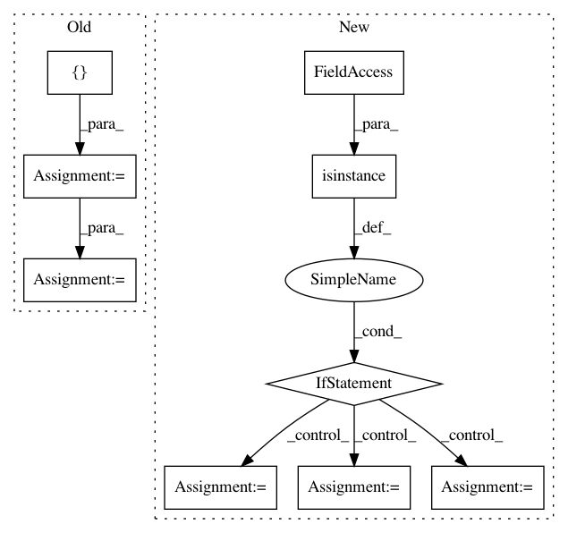

1271e900113a2730b8fec9db1e750b26db4b6af9,tensorflow_ranking/python/model.py,_GroupwiseRankingModel,_compute_logits_impl,#_GroupwiseRankingModel#Any#Any#Any#Any#Any#Any#,330
Before Change
// Reset invalid scores to 0 based on mask.
scores_mask = tf.gather(
tf.expand_dims(self._indices_mask, 2),
tf.zeros([tf.shape(input=scores)[2]], tf.int32),
axis=2)
scores = tf.compat.v1.where(scores_mask, scores, tf.zeros_like(scores))
// Scatter scores from [batch_size, num_groups, logits_size] to
// [batch_size, list_size].
logits = tf.scatter_nd(self._score_scatter_indices, scores,
[batch_size, list_size])
counts = tf.scatter_nd(self._score_scatter_indices,
tf.cast(scores_mask, tf.float32),
[batch_size, list_size])
// Use average.
logits = tf.compat.v1.div_no_nan(logits, counts)
return logits
def _make_model_fn(ranking_model, ranking_head):
After Change
task_logits = tf.compat.v1.div_no_nan(task_logits, counts)
return task_logits
if isinstance(scores, dict):
logits = {}
for name, task_scores in six.iteritems(scores):
logits[name] = _accumulate_scores(task_scores)
else:
logits = _accumulate_scores(scores)
return logits
def _make_model_fn(ranking_model, ranking_head):
In pattern: SUPERPATTERN
Frequency: 5
Non-data size: 9
Instances
Project Name: tensorflow/ranking
Commit Name: 1271e900113a2730b8fec9db1e750b26db4b6af9
Time: 2019-09-18
Author: xuanhui@google.com
File Name: tensorflow_ranking/python/model.py
Class Name: _GroupwiseRankingModel
Method Name: _compute_logits_impl
Project Name: sony/nnabla
Commit Name: e4140025046de5157cac1eaa21b59b56032b40d1
Time: 2018-10-30
Author: Woody.Li@sony.com
File Name: python/test/utils/conversion/gen_report.py
Class Name: StatusHandler
Method Name: handle_import_table
Project Name: pysb/pysb
Commit Name: eab2da81c65974e08b8245bbf8a052093f972df3
Time: 2009-08-09
Author: jmuhlich@bitflood.org
File Name: Pysb.py
Class Name: Rule
Method Name: __init__
Project Name: NifTK/NiftyNet
Commit Name: d2bf5afe5895aaee163bd5efc1dc8acb9d8d59af
Time: 2017-11-05
Author: wenqi.li@ucl.ac.uk
File Name: niftynet/application/label_driven_registration.py
Class Name: RegApp
Method Name: connect_data_and_network
Project Name: raghakot/keras-vis
Commit Name: 2443550ee6915daf6e7ff6306f3dc2922752ea4b
Time: 2017-07-09
Author: ragha@outlook.com
File Name: vis/backend/tensorflow_backend.py
Class Name:
Method Name: modify_model_backprop